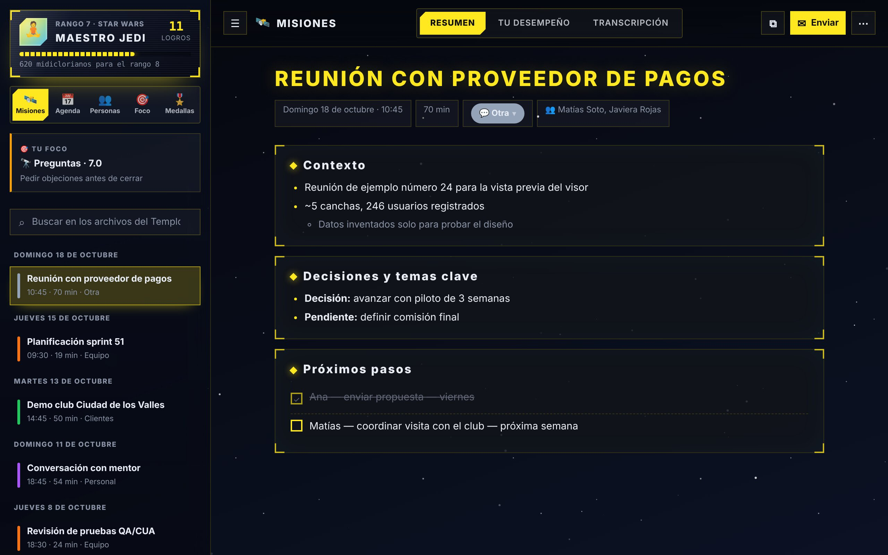
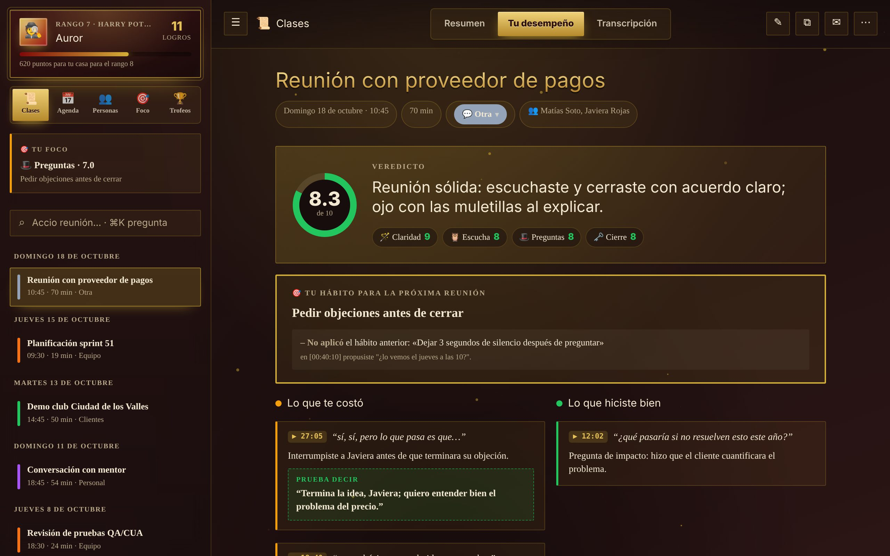
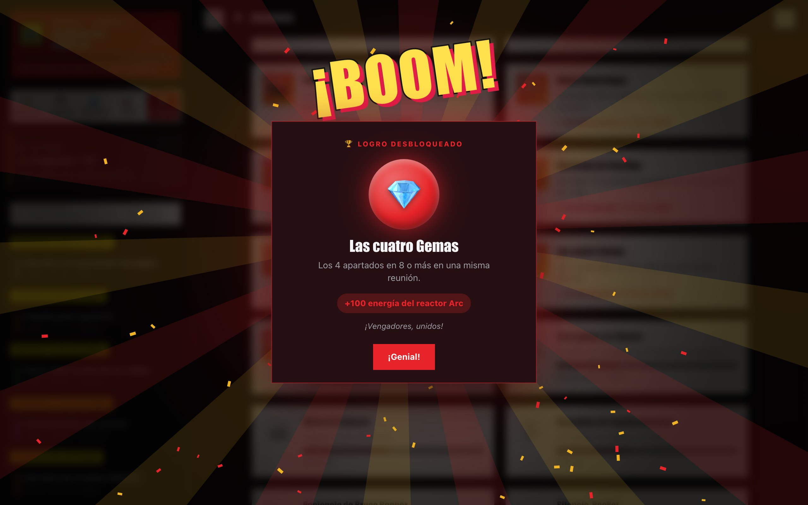

Sal de cada reunión con las notas listas y sabiendo cómo mejorarLeave every meeting with your notes done and knowing how to get better
Minuta graba tus reuniones, las transcribe en tu computador y le pide a tu IA (Claude, ChatGPT o Gemini, con tu propia cuenta) las notas, los compromisos y un feedback honesto sobre cómo te comunicaste. Mejoras subiendo de rango en tu saga favorita. Gratis, de código abierto y sin servidores.Minuta records your meetings, transcribes them on your computer and asks your AI (Claude, ChatGPT or Gemini, with your own account) for the notes, the commitments and honest feedback on how you communicated. You improve by ranking up in your favorite saga. Free, open source and serverless.
curl -fsSL https://raw.githubusercontent.com/minuta-app/minuta/main/instalar.sh | bashMac con chip Apple y macOS 15 o posterior.Apple silicon Mac with macOS 15 or later. Necesitas Claude, ChatGPT o Gemini: te explicamos cómo.You need Claude, ChatGPT or Gemini: here's how.
El audio nunca sale de tu computador. Solo el texto viaja a tu IA, con tu cuenta, y las notas vuelven a tu carpeta y a tu Git, listas para usarlas donde quieras.Audio never leaves your computer. Only the text goes to your AI, with your account, and the notes come back to your folder and your Git, ready to use anywhere.
Por qué Minuta y no otra app de notasWhy Minuta and not another notes app
La mayoría de los tomadores de notas con IA funcionan en la nube de alguien más. Minuta funciona al revés.Most AI note-takers run on someone else's cloud. Minuta works the other way around.
Tus reuniones no son nuestro negocioYour meetings are not our business
Lo que se habla en una reunión es tuyo y de quienes estaban ahí. Minuta no tiene servidores, ni cuentas, ni base de datos: no hay dónde guardar tus cosas aunque quisiéramos.What's said in a meeting belongs to you and the people who were there. Minuta has no servers, no accounts and no database: there's nowhere to keep your things even if we wanted to.
Todo en tu computadorEverything on your computer
La transcripción y la separación de voces corren en tu equipo, sin internet.Transcription and speaker separation run on your machine, offline.
Tus notas, en tu GitYour notes, in your Git
Archivos Markdown en tu carpeta (funcionan con Obsidian) y, si quieres, en un repositorio privado de tu propia cuenta de GitHub o GitLab.Markdown files in your folder (they work with Obsidian) and, if you want, in a private repository in your own GitHub or GitLab account.
Nada se comparteNothing is shared
Sin telemetría, analítica ni publicidad. Tu feedback es solo para ti: el resumen para los demás sale cuando tú lo envías, y nunca lo incluye.No telemetry, analytics or ads. Your feedback is only for you: the summary for others goes out when you send it, and never includes it.
Tu IA, tu cuentaYour AI, your account
Solo el texto de la reunión va a la IA que elegiste, directo y con tu suscripción. Minuta no ve nada en el camino.Only the meeting text goes to the AI you chose, directly and with your subscription. Minuta sees nothing along the way.
No nos creas: revisa el códigoDon't trust us: check the code
Todo el código es público (licencia MIT). Cualquiera puede leer qué hace Minuta, auditarlo o mejorarlo.All the code is public (MIT license). Anyone can read what Minuta does, audit it or improve it.
Tus notas, tus reglasYour notes, your rules
Cada reunión queda como un archivo Markdown en tu carpeta y en tu propio Git. No hay formato cerrado ni exportación pagada: puedes construir encima, conectarlas con lo que ya usas o llevártelas donde quieras.Every meeting is a Markdown file in your folder and your own Git. No locked format, no paid export: build on top of them, connect them to what you already use or take them anywhere.
Obsidian, VS Code o cualquier editor. Se buscan, enlazan y versionan como cualquier Markdown.Obsidian, VS Code or any editor. Search, link and version them like any Markdown.
Notion, Google Docs, Confluence o tu CRM: importa el Markdown o súbelo con un script.Notion, Google Docs, Confluence or your CRM: import the Markdown or push it with a script.
Fecha, tipo, participantes y métricas van al inicio de cada archivo: manda tus compromisos a tu gestor de tareas o arma tu propio tablero.Date, type, participants and metrics sit at the top of each file: send your commitments to your task manager or build your own dashboard.
Abre tu repositorio de notas con Claude Code, Codex o Gemini y pide: «¿qué acordé con Matías este trimestre?».Open your notes repo with Claude Code, Codex or Gemini and ask: “what did I agree with Matías this quarter?”.
Con GitHub Actions o GitLab CI, cada nota nueva puede avisar en Slack, actualizar una planilla o lo que se te ocurra.With GitHub Actions or GitLab CI, every new note can post to Slack, update a sheet or whatever you think of.
---
fecha: 2026-10-20
hora: 09:30
tipo: Equipo
duracion_min: 18.5
habla_yo_pct: 41
participantes: ["Matías", "Carla"]
---
# Alcance del sprint 12
### Próximos pasos
- [ ] Ana — entregar el PDF — jueves (2026-10-22)
- [ ] Matías — priorizar el tablero — lunes
## Personas
- **Matías** (PO): pide estimaciones concretas
…Usa la IA que ya tienes, no una másUse the AI you already have, not one more
Minuta no trae su propia IA ni te cobra una suscripción: le pide a la tuya que escriba. Elige la que ya usas.Minuta doesn't bring its own AI or charge a subscription: it asks yours to write. Pick the one you already use.
Claudecon Claude Codewith Claude Code
Necesitas Claude Pro o Max (o una cuenta de empresa). Es la que mejor conoce Minuta.You need Claude Pro or Max (or a work account). It's the one Minuta knows best.
Cómo instalarlaHow to install itChatGPTcon Codexwith Codex
Funciona con cualquier cuenta de ChatGPT, incluso la gratis (con límites de uso).Works with any ChatGPT account, even the free one (with usage limits).
Cómo instalarlaHow to install itGemini betacon Antigravity CLIwith Antigravity CLI
Con tu cuenta de Google. Es nueva (Google la lanzó en 2026), así que aún la estamos puliendo.With your Google account. It's new (Google launched it in 2026), so we're still polishing it.
Cómo instalarlaHow to install itYa pagas (o usas gratis) una IA. Minuta no suma otro cobro.You already pay for (or use for free) an AI. Minuta adds no other charge.
El texto va directo de tu computador a tu proveedor, bajo el acuerdo que ya tienes con él.Text goes straight from your computer to your provider, under the agreement you already have.
Tus notas las escribe el modelo que usas a diario, no uno barato elegido para ahorrar.Your notes are written by the model you use daily, not a cheap one picked to save costs.
Sin contraseñas que entregar. Si cambias de IA, tus notas siguen siendo tuyas.No passwords to hand over. If you switch AI, your notes stay yours.
¿Claude Code, Codex, terminal…? Tranquilo.Claude Code, Codex, terminal…? Relax.Preparamos una guía sin tecnicismos: qué es cada una, cuál te conviene y cómo dejarla lista en cinco minutos, paso a paso.We wrote a jargon-free guide: what each one is, which one suits you and how to set it up in five minutes, step by step.
Abrir la guíaOpen the guideUn asistente y un coach en cada reuniónAn assistant and a coach in every meeting
Sin bots que entren a la llamada: Minuta escucha tu micrófono y el audio del computador.No bots joining the call: Minuta listens to your mic and your computer's audio.

Notas que sí sirvenNotes that actually help
Temas, decisiones, pendientes y próximos pasos con responsable y fecha. Quién dijo qué, con las voces separadas. Y un mensaje listo para enviar a los participantes, solo con los hechos.Topics, decisions, open items and next steps with owner and date. Who said what, with voices separated. And a message ready to send to participants, with just the facts.
- Detecta Teams, Zoom, Meet o Slack y te ofrece grabarDetects Teams, Zoom, Meet or Slack and offers to record
- Pregúntale a tus reuniones: responde citando el minuto exactoAsk your meetings: it answers citing the exact minute
- Agenda con compromisos y fichas de cada personaAgenda with commitments and a card for each person

Mejora reunión a reuniónImprove meeting by meeting
Cada reunión te deja un veredicto en una frase, lo que te costó con la cita exacta y un solo hábito para la próxima. Minuta revisa si lo cumpliste.Each meeting leaves you a one-line verdict, what cost you with the exact quote and a single habit for next time. Minuta checks whether you kept it.
- Claridad, escucha, preguntas y cierreClarity, listening, questions and closing
- Muletillas, monólogos e interrupciones medidos del audioFillers, monologues and interruptions measured from audio
- Coach en vivo y gimnasio para ensayar por vozLive coach and a gym to rehearse out loud
Mejorar no tiene por qué ser aburridoGetting better doesn't have to be boring
Subes de rango, desbloqueas logros y los personajes de tu universo favorito te dicen cómo te fue. Cuatro vienen incluidos; el resto se descarga gratis del catálogo de la comunidad, o crea el tuyo.You rank up, unlock achievements and characters from your favorite universe tell you how you did. Four are included; the rest are free downloads from the community catalog, or create your own.

Logros que premian lo que importaAchievements that reward what matters
No por asistir: por cerrar con fecha, dejar terminar a los demás o cumplir tu hábito tres reuniones seguidas. Cada universo lo celebra a su manera.Not for showing up: for closing with a date, letting others finish or keeping your habit three meetings in a row. Each universe celebrates its own way.
Minuta la hacemos entre todosWe build Minuta together
Es gratis y abierta porque creemos que comunicarse mejor no debería tener precio. Si te sirve, hay muchas formas de sumarte, y ninguna exige saber programar.It's free and open because we think communicating better shouldn't have a price. If it helps you, there are many ways to join in, and none require coding.
Conversa con la comunidadTalk with the community
Preguntas, ideas a medio cocinar y consejos entre quienes usan Minuta.Questions, rough ideas and tips from people who use Minuta.
Ir a las conversacionesJoin the discussions 🧩Muestra lo que armasteShow what you built
Un script con tus notas, un tablero, una automatización: compártelo y otros lo usan.A script on your notes, a dashboard, an automation: share it so others can use it.
CompartirShare 🗳️Vota los universosVote on universes
Tus 👍 deciden cuáles aparecen primero. Se vota desde la misma app.Your 👍 decide which show first. Vote right from the app.
VotarVote 🌌Crea y comparte un universoCreate and share a universe
Describe tu saga favorita, tu IA lo arma y con 📤 lo propones al catálogo para todos.Describe your favorite saga, your AI builds it, and 📤 proposes it to the catalog for everyone.
Ver el catálogoSee the catalog 🌍Tradúcela a tu idiomaTranslate it
Hoy habla español, inglés, francés y portugués. Ayuda a revisar o suma el tuyo.Today it speaks Spanish, English, French and Portuguese. Help review or add yours.
Ver idiomasSee languages 🐞Cuéntanos qué mejorarTell us what to improve
¿Algo falló o se te ocurrió algo? Desde la app o aquí, con tus palabras.Something broke or you had an idea? From the app or here, in your own words.
EscribirWrite to us 🛠️Programa con tu IACode with your AI
El proyecto trae una guía que entienden Claude, Codex o Gemini. Elige un issue y abre tu primer aporte.The project ships a guide that Claude, Codex or Gemini understand. Pick an issue and open your first contribution.
Cómo aportarHow to contribute ⭐Dale una estrellaGive it a star
Toma un segundo y ayuda a que más gente la encuentre.Takes a second and helps more people find it.
Ir a GitHubGo to GitHubListo en dos minutosReady in two minutes
Al abrirla, un asistente te pregunta lo necesario: quién eres, tu IA, el modelo de transcripción y dónde guardar tus notas.When you open it, a short welcome asks what it needs: who you are, your AI, the transcription model and where to keep your notes.
1Con un comandoWith one command
Abre la Terminal (⌘ Espacio, escribe «Terminal») y pega esto. Descarga la última versión, verifica su huella y la abre.Open Terminal (⌘ Space, type “Terminal”) and paste this. It downloads the latest version, verifies it and opens it.
curl -fsSL https://raw.githubusercontent.com/minuta-app/minuta/main/instalar.sh | bash2O descargando la appOr by downloading
Descomprime y arrastra Minuta a Aplicaciones. Como aún no está firmada por Apple, la primera vez macOS dirá que no pudo verificarla: ve a Ajustes del Sistema → Privacidad y seguridad, baja y toca «Abrir igualmente». Con el comando de arriba no aparece ese aviso.Unzip and drag Minuta to Applications. Since it isn't signed by Apple yet, the first time macOS will say it couldn't verify it: go to System Settings → Privacy & Security, scroll down and click “Open Anyway”. The command above skips that warning.
Descargar para MacDownload for Mac1Con un comandoWith one command
Abre PowerShell (tecla Windows, escribe «PowerShell») y pega esto. Descarga, verifica la huella e instala solo para tu usuario.Open PowerShell (Windows key, type “PowerShell”) and paste this. It downloads, verifies and installs just for your user.
irm https://raw.githubusercontent.com/minuta-app/minuta/main/instalar.ps1 | iex2O con el instaladorOr with the installer
Ábrelo y listo. Como aún no está firmado, Windows puede mostrar «Windows protegió tu PC»: toca «Más información» → «Ejecutar de todas formas».Open it and you're done. Since it isn't signed yet, Windows may show “Windows protected your PC”: click “More info” → “Run anyway”.
Descargar para WindowsDownload for Windows1Con un comandoWith one command
En una terminal (Ctrl+Alt+T en Ubuntu). Se instala en tu usuario, sin sudo, con su ícono en el menú de aplicaciones.In a terminal (Ctrl+Alt+T on Ubuntu). It installs for your user, no sudo, with its icon in the app menu.
curl -fsSL https://raw.githubusercontent.com/minuta-app/minuta/main/instalar.sh | bash2O con el AppImageOr with the AppImage
Un solo archivo: dale permiso de ejecución y ábrelo. Necesita FUSE (en Ubuntu 22.04+: sudo apt install libfuse2).A single file: make it executable and open it. Needs FUSE (on Ubuntu 22.04+: sudo apt install libfuse2).
Preguntas frecuentesFAQ
¿Es una alternativa a Granola, Otter o Fireflies?Is it an alternative to Granola, Otter or Fireflies?
Sí, si buscas notas de reuniones con IA que sean gratis, de código abierto y privadas: Minuta transcribe en tu computador, usa la IA que ya tienes y guarda las notas en tu carpeta y tu Git. Además te entrena para comunicarte mejor, con feedback y logros. Funciona en Mac, Windows y Linux, en español e inglés.Yes, if you want AI meeting notes that are free, open source and private: Minuta transcribes on your computer, uses the AI you already have and keeps notes in your folder and your Git. It also coaches you to communicate better, with feedback and achievements. It runs on Mac, Windows and Linux, in Spanish and English.
¿Cuánto cuesta?How much does it cost?
Nada. Minuta es gratis y de código abierto (MIT). Usa la IA que ya tienes; con ChatGPT incluso sirve la cuenta gratis.Nothing. Minuta is free and open source (MIT). It uses the AI you already have; with ChatGPT even the free account works.
¿Necesito saber programar?Do I need to know how to code?
No. Lo único "técnico" es instalar tu IA una vez, copiando un par de comandos. La guía te lleva de la mano y el asistente de Minuta comprueba que quedó funcionando.No. The only "technical" bit is installing your AI once by copying a couple of commands. The guide walks you through it and Minuta's welcome checks it works.
¿Funciona con ChatGPT o Gemini?Does it work with ChatGPT or Gemini?
Sí. Puedes elegir Claude (con Claude Code), ChatGPT (con Codex) o Gemini (con Antigravity CLI, todavía en beta). Lo eliges en el asistente de bienvenida y lo puedes cambiar después. Cómo instalar cada una.Yes. You can pick Claude (with Claude Code), ChatGPT (with Codex) or Gemini (with Antigravity CLI, still in beta). You choose it in the welcome and can change it later. How to install each one.
¿Puedo exportar mis notas o usarlas en otras herramientas?Can I export my notes or use them in other tools?
Sí, sin pedir permiso: son archivos Markdown en tu carpeta y, si activas el respaldo, en tu propio repositorio de GitHub o GitLab. Ábrelas en Obsidian, impórtalas en Notion o Google Docs, procésalas con un script o con tu IA. El formato está documentado.Yes, no permission needed: they're Markdown files in your folder and, if you turn on backup, in your own GitHub or GitLab repository. Open them in Obsidian, import them into Notion or Google Docs, process them with a script or your AI. The format is documented.
¿Alguien más puede leer mis notas?Can anyone else read my notes?
No. Minuta no tiene servidores ni cuentas, así que no hay copia en ninguna parte salvo tu computador y, si lo activas, tu propio repositorio privado. Ni los creadores de Minuta pueden verlas.No. Minuta has no servers or accounts, so there's no copy anywhere except your computer and, if you turn it on, your own private repository. Not even Minuta's creators can see them.
¿Qué se envía a internet?What gets sent to the internet?
El audio nunca sale de tu computador. Solo el texto de la transcripción va a la IA que elegiste, con tu cuenta. Además, Minuta consulta si hay una versión nueva y el catálogo público de universos e idiomas. Sin telemetría ni analítica.Audio never leaves your computer. Only the transcript text goes to the AI you chose, with your account. Minuta also checks for new versions and the public catalog of universes and languages. No telemetry or analytics.
¿Por qué mi computador dice que no puede verificar la app?Why does my computer say it can't verify the app?
Porque Minuta todavía no paga los certificados de Apple y Microsoft que hacen desaparecer esos avisos: es un proyecto gratis. No significa que tenga algo raro: el código es abierto, cada versión se compila en GitHub a la vista de todos y los instaladores de un comando revisan la huella (SHA-256) antes de instalar. En Mac: Ajustes del Sistema → Privacidad y seguridad → «Abrir igualmente». En Windows: «Más información» → «Ejecutar de todas formas».Because Minuta doesn't pay yet for the Apple and Microsoft certificates that make those warnings go away: it's a free project. It doesn't mean anything is wrong: the code is open, every version is built on GitHub in public and the one-command installers check the fingerprint (SHA-256) before installing. On Mac: System Settings → Privacy & Security → “Open Anyway”. On Windows: “More info” → “Run anyway”.
¿Funciona en Windows y Linux?Does it work on Windows and Linux?
Sí: es la misma app, con las mismas notas, universos y coach. En Windows y Linux la transcripción usa el procesador (en Mac, el chip gráfico), así que es algo más lenta; el modelo «Liviano» va bien en casi cualquier computador. El calendario se conecta pegando la dirección iCal de Google Calendar u Outlook.Yes: it's the same app, with the same notes, universes and coach. On Windows and Linux transcription runs on the CPU (on Mac, the GPU), so it's a bit slower; the “Light” model runs well on almost any computer. The calendar connects by pasting your Google Calendar or Outlook iCal address.
¿Está bien grabar a otras personas?Is it OK to record other people?
Depende de tu país y del contexto. Avisa a los participantes y pide su consentimiento antes de grabar: es lo correcto y en muchos lugares es obligatorio.It depends on your country and context. Tell participants and ask for consent before recording: it's the right thing to do and required in many places.
¿Cómo se actualiza?How does it update?
Minuta revisa sola si hay una versión nueva y te ofrece actualizar con un clic. Tus notas, perfil y universos no se tocan.Minuta checks for new versions on its own and offers a one-click update. Your notes, profile and universes are never touched.
Tu próxima reunión puede ser la primera con notas listasYour next meeting can be the first with notes done
Gratis, privada y tuya. Instálala hoy y, si te gusta, cuéntaselo a tu equipo.Free, private and yours. Install it today and, if you like it, tell your team.